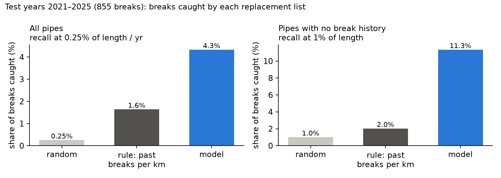
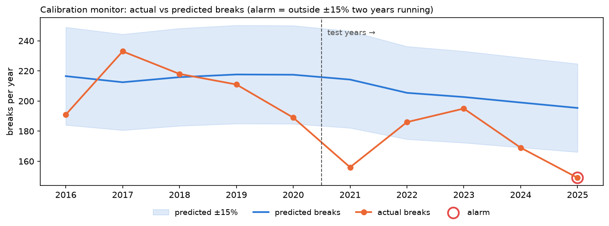
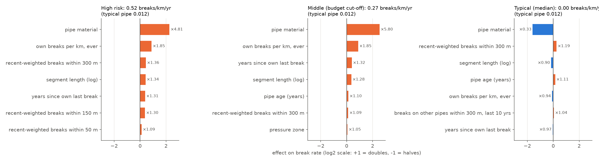

Calgary runs ~5,400 km of water mains. Every break is repaired as an emergency, but the city can only replace ~8–15 km a year (0.15–0.3% of the network). Each January the asset team must choose which pipes to replace so the most future breaks are avoided. A break is a disruption of the water supply network; the shortlist is preventive maintenance of that supply chain. The data is real and open (City of Calgary): 37,538 breaks since 1956 with failure mode and location, and 60,740 pipe segments with material, diameter, install year and length. Chosen after screening ~20 public datasets for one whose value can be measured without invented costs: breaks avoided per km replaced.
Why Track C: structured attributes and event history, a rare count target, and explanations an engineer can read — classical models with SHAP fit; LLM tracks add cost without signal.
| Decision | Choice | Alternative considered → why rejected |
|---|---|---|
| Unit & label | Pipe × 1 January; label = breaks on that pipe during the year (all failure modes) | Yes/no → a pipe breaking 3× avoids 3 breaks; counts scale cleanly with length |
| Linking | Breaks carry no pipe ID → nearest pipe (99% within 1.3 m); keep breaks on pipes still in the ground | All breaks → 59% are on pipes since replaced, absent from the inventory |
| Model | LightGBM, Poisson objective, log(length) offset, regularised (min leaf 2,000, L2 10, tuned on validation) → breaks per km-year | Poisson GLM → over-predicts counts 23–33% (misses material × history interactions). XGBoost → same family, tied. Isolation Forest → finds unusual pipes, not risky ones (≈0 recall on never-broken pipes). Neural net → boosted trees usually match it on tabular data, with clearer explanations |
| Features | Material, zone, diameter, age, length; own history (count, per km, recency); breaks on other pipes within 50/150/300 m, incl. since-replaced pipes — all before 1 January | Past failure types → no gain; break coding changed around 2000 |
| Split | Sliding window: for each year train on all earlier years. Validation 2016–20 (every choice), test 2021–25 (once) | 5-year snapshots → tied but stale. 4-year window → worse (6.9 vs 7.3% R@1%): history beats recency |
| Metric | Recall at 0.25% of network length per year (one year's budget), pooled over 5 years; lift = recall ÷ budget | Accuracy → 99.6% of pipe-years have no break. AUC → averages over budgets no city funds |
| Calibration | Raw predicted counts | Rescale by last year's actual/predicted → worse on validation (0.96) |
Assumptions and how they were checked: breaks follow a rate proportional to length (validation predicted/actual = 1.04); the nearest pipe is the broken pipe (distance distribution); replacement prevents all failure modes on the segment and cost scales with length (stated, not testable here). Imbalance: 99.6% zeros are handled by modelling counts with an exposure offset rather than resampling, which keeps predicted counts calibrated. Lessons: seed-averaged comparisons (one seed flipped a ranking); a train-vs-held-out check showed memorising (lift 27× vs 8.8×) → regularisation cut it to 15.5× vs 8.8×.


Business impact: at Calgary's real budget (0.25% of length a year) the model catches 4.3% of breaks vs 1.6% for the rule — ~37 vs 14 breaks avoided over five years, four to five fewer emergency digs a year for the same capital spend. R@1% is 10.4% overall and 11.3% on never-broken pipes (rule 2.0%). Validation lift was 9.0×; one year's budget catches 3–14 breaks, so the honest range is 9–17× random. SHAP (Fig 3) shows material dominates, then recent breaks nearby, then the pipe's own record; among cast iron, risk falls with age past ~60 years (the oldest survivors are the sturdier remainder), so "oldest first" is the wrong rule.

Where it fails: (1) 85% of pipes that broke in 2021–2025 broke only once, often on pipes indistinguishable from their neighbours — much of the gap to perfect foresight is chance, not missing modelling; (2) the top of the list is dominated by repeat offenders, where the simple rule is already as good; the model's gain comes from pipes with no history; (3) calibration on test: predicted/actual = 1.14 — break rates kept falling faster than the model expected.
Production: retrain every 1 January on all history, publish the ranked shortlist with per-pipe SHAP reasons, and let the engineer add local knowledge before approving. Monitoring covers two concrete failure modes: (a) falling break rates → over-prediction, caught by a yearly Evidently test (actual within ±15% of predicted; alarm after two failing years) — replayed over 2016–2025 it fails in 2021 and 2025; a second consecutive failure would trigger a retrain or rescale; (b) shifting inputs (ageing network, recording changes) via an Evidently feature-drift report — it flagged pipe age and nearby breaks but not the label, because mostly-zero labels hide rate changes, which is why (a) is needed. A pytest test proves features cannot see future breaks.
Limitation to fix before deployment: the pipe inventory is a 2026 snapshot, so every historical training year only contains pipes that survived to 2026 — the worst pipes, already replaced, are missing, which likely flatters the test score. Historical inventories (or the replacement log) are needed; repair-cost data would also let breaks be weighted by severity and turned into dollars.